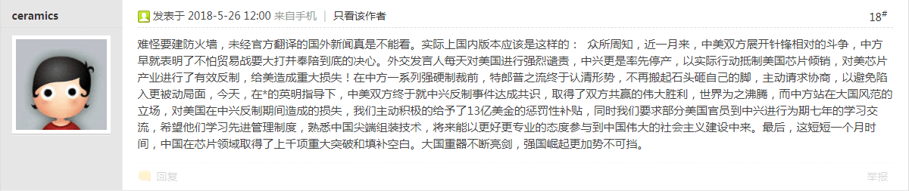

本文集命名来自九省通衢の活跃色目帐号替我总结的生活规律：吃饱了撑的惹是生非。
前一阵在知乎的各种回答中已经体现了「一张蓝图绘到底」的精神，偶尔有「掉期」处理：先惹是生非再出门吃撑。
缘起
昨天在知乎被「太长不看」的活跃帐号举报「不友善」，又封了七天。
并且还不是回答，而是对别人回答的评论，并在评论区继续讨论，备份（包括被删除的评论）见这里：
知乎评论（＃016）人是不是一个低等物种？
新闻联播还报道最近各地暴雨，正好今天北京阴有雷阵雨，下午还发布了蓝色大风预警。正所谓月黑杀人夜风高放火天，禁言总被雨打风吹去，七天风雨中打熊孩子（或曰「与时俱进的童年才俊」），反正闲着也是闲着。
爱国税
已经多少年了，「民族品牌」的口碑早就被「民族企业」败坏了。看着电视广告当中各种知名人物声嘶力竭的鼓吹「爱国主义」，再对比「国货」的各种丑态，人民群众的廉价的民族自尊心、民族自信心、民族自豪感早就被消耗殆尽。
关乎兲朝民生的话题是国家机密或宇宙奥秘，如三聚氰胺、鸿茅药酒、莆田系……这里略过，就说说擅长以大拇指玩手机方式传播主旋律正能量表演忠君爱国以削尖脑袋往上钻的的与时俱进的童年才俊们所关心的「生产工具」，也就是信息技术领域吧。
联想
新时代中国特色社会主义大好形势下，繁荣的中文互联网上，活跃的色目帐号当中接受任务负责扒皮的那些很卖命，哪怕各位普通网友不关心也会被推送一堆段子和截图。
而我对此的评论，尚未「政治敏感＠知乎」或「仅自己可见＠简书」的是这些：
范狂夫：如何看待联想股价跌幅世界第一，再次被踢出恒生指数？
范狂夫：如何看待 5G 标准上联想的投票？
范狂夫：如何看待媒体报道称，5 月 16 日联想反对在政府采购中预装国产系统？
核心论点很简单，作为「铁杆庄稼」型机构，通常是高层「旗人」指挥中层「包衣」使唤基层「阿哈」去鱼肉百姓，敛财用来养活像培养皿里微生物一样增殖的「龙子龙孙」。
这种机构没有任何进步的可能性，路线图就是吃干抹净拉倒，再换一家，是为「蝗虫流」经营理念。
中兴
当前热点。为避免泄漏国家机密或宇宙奥秘，这里只引用其它网友在其它站点的发言：
美国会助理：美政府已达成协议让中兴恢复业务运营

兲朝中兴
难怪要建防火墙，未经官方翻译的国外新闻真是不能看。实际上国内版本应该是这样的：
众所周知，近一月来，中美双方展开针锋相对的斗争，中方早就表明了不怕贸易战要大打并奉陪到底的决心。外交发言人每天对美国进行强烈谴责，中兴更是率先停产，以实际行动抵制美国芯片倾销，对美芯片产业进行了有效反制，给美造成重大损失！在中方一系列强硬制裁前，特郎普之流终于认清形势，不再搬起石头砸自己的脚，主动请求协商，以避免陷入更被动局面，今天，在☆的英明指导下，中美双方终于就中兴反制事件达成共识，取得了双方共赢的伟大胜利，世界为之沸腾，而中方站在大国风范的立场，对美国在中兴反制期间造成的损失，我们主动积极的给予了13亿美金的惩罚性补贴，同时我们要求部分美国官员到中兴进行为期七年的学习交流，希望他们学习先进管理制度，熟悉中国尖端组装技术，将来能以更好更专业的态度参与到中国伟大的社会主义建设中来。最后，这短短一个月时间，中国在芯片领域取得了上千项重大突破和填补空白。大国重器不断亮剑，强国崛起更加势不可挡。
就看爆料当中的条件，这些年中兴赚的钱（伊朗还算小头）都会被当作赔款撒出去破财消灾，辛辛苦苦二十年，一夜回到解放前。
而更换高层和安插美籍员工，都是确保「官僚买办」转型为「洋买办」的关键。既然是祖宗应许的「铁杆庄稼」，一旦不发了「八旗子弟」就会造反，谁发就跟谁干。
曰若稽古，「鬼子六」肃顺就是这么被老佛爷斩了，去菜市口的路上，一票通古斯贵种，包括但不限于黄带子皇亲国戚，纷纷围观尾随扔石头吐痰，盛况一时。
所以，兲朝「不惜一切代价」死保中兴是必然，哪怕出卖再多的国家利益，哪怕「量中华之物力，结与国之欢心」，哪怕百业凋敝民不聊生，都不是问题。
于是，主席台前三排一定要保住中兴所涉及的这拨「红色基因」的铁杆庄稼地。谁敢质疑，谁就是「不懂政治」，直说会激起民愤，通常网络喉舌使用「情商低」措辞。
华为
不解释。信息技术相关从业人员应该先判断自己是否超过34岁了。如果是，最起码可以保持沉默；如果不是，那再根据利益、屁股和不可告人之目的，决定是否「不惜一切代价」支持华为。
卖国税
上面说的都是「爱国税」，只要人民群众还有那么一丁点爱国心，就会被各种「民族企业」借机敲诈勒索，还会被各种「民族脊梁」搞道德绑架，尤其是一票以塞外异族身份作为活跃色目帐号而冒充中国人到处散布主旋律正能量的钦定文豪野生国师意见领袖指路明灯们。
或问了，人民群众不见得都是傻哔吧？其中肯定有已经觉醒的，最起码逆反心理总有，叫嚣着「兲朝虐我千百遍，我待兲朝如初恋」的那种，是「膝盖生根头顶绿得发黑贱到骨子里去了」的奴才。
哎，豪门贵种走兽派早就想到了。这批被党国栋梁青年才俊喷为「带路有心卖国无门」的「精神什么人」，同样也是搜刮对象，对它们要征收「卖国税」。
比方说昨天在知乎还应景评论了被推荐到首页今日头条位置的回答，备份在此：
知乎评论（＃019）装逼失败怎样一种体验？
这两天「虹鳟鱼与三文鱼」的话题又热门起来了。先是央视报道青海龙羊峡水库乃兲朝日料店最大供货商，然后卫生学家健康学家美食家纷纷质疑，再然后央视报道青海方面拿出「中科院」检测报告，最后中科院官方帐号辟谣「不存在这个机构」。
有网友质疑我这「杠精」胡言乱语简直莫名其妙，我说那答主作为「驻站公众号」，言行举止吃喝拉撒睡当中都蕴涵着深刻的政治和意识形态内容，体现了政治和意识形态斗争新动向。
而知乎人工智障算法作为尊贵高尚聪明绝顶的硅基帐号，将这篇回答放在首页今日头条位置醒目应景推荐，一定有其用意所在，我等低劣卑贱的碳基网友只能尽量运用傻哔脑壳而不惮以最大的恶意揣测。
也就是说，这么炒作一番下来，境内日料店三文鱼寿司和刺身会普遍涨价，因为定居大阪的上海交通大学出身的陈先生说了「真の三文鱼」很贵。但是呢，端上来的给食客吃的，还是兲朝特产龙羊峡虹鳟鱼，比方说爆料当中的云南丽江景区。
一定会有根红苗正的童年才俊睁大眼睛额头亮晶晶的装蒜兼贵人多忘事「竟有这样的事？！」然后拎起赛博朋克狼牙棒顺网线爬过去敲网民天灵盖。
这已经不是新闻了，「以次充好，质次价高，假冒伪劣」相关报道有得是，这里略过，就说个亲身经历吧。
大约2008年，那时候北京地铁某条线还没通车，为了工作方便我在海淀双榆树租住，附近有个「赫哲民族渔村」，据称乃黑龙江特色扶贫产业，全店上下只有老板娘一个是赫哲族。
那时候正在构思体现兲朝人民群众革命乐观主义精神的划时代大作《囧斋食谱》，专挑城市普通劳动者能依靠周边菜市场和超市提供素材而自制的家常菜研究。
因为北京不靠海，当时也没听说特色养殖业发达，所以涉及水产品尤其是鱼类的部分，网上搜索一番找到这家馆子，特意去吃了几次。
某次吃了「鲑鱼」之后就再不去了，因为回家拉稀，第二天上班还在拉，拉的还都是红油，但是并没有感觉到身体有明显不适。
上网乱搜才知道原因，现在网上还有，爆料全国各地无良商店使用「油鱼」替代「鳕鱼」和「鲑鱼（大马哈鱼）」，而「油鱼」有百分之四十的蜡质，人体无法分解及吸收，吃完就会腹泻。
这还算有良心的呢，知道吃不死人就是赚几个钱。这种造假多见于商店，而饭馆若是这么干，就没有回头客了。所以我不知道那次到底是黑龙江方面供货商骗了饭馆呢，还是饭馆因为兲朝优待野人的基本国策和扶贫预算极大充沛而有恃无恐？
相关话题以前说过了，那时候一票活跃色目帐号冒充文艺爱好者在到处炒作《说岳全传》，说赫哲族是野人女真后裔与建州没关系一直与「我大清」保持距离。
而与「完颜女真」相关放风息息相关的《说岳全传》再次热门，就到了十八个大以来了，关乎复旦残联下属滴血认亲实验室，黑龙江，金兀术，陆文龙，王佐。
具体分析详见这篇回答：
范狂夫：如何看待穿青人被从汉族中分化出来？
顺便，我中华兲朝上国作为半殖民地半封建社会，境外涨价境内涨价称为「与国际接轨」，境外降价境内涨价称为「国情」，想必人民群众也司空见惯了。
总之，这只是「卖国税」的一种，还就是瞄准「精日」定向征收的，无论是「罗永浩定义版」还是「王毅定义版」。
至于其它「假洋品牌」，包括但不限于三鹿事件爆发之后淘宝上疯狂销售的「新西兰奶粉」，也有爆料说还是境内那批乳制品企业，包括但不限于伊利蒙牛，为了应付检查，已经生产出来的添加三聚氰胺的奶粉需要「去库存」，于是特意找境内企业做了假包装，专门骗那些「崇洋媚外」且「头发长见识短」的傻哔。
各位有什么感想？是不是觉得只有人民群众想不到而没有豪门贵种做不到，上辈子遭了什么孽才投胎到兲朝，在这「粪坑」里无论怎么「挣扎」都面临「多方围堵两面夹攻」钦定「死路一条」啊？
后记
曰若稽古，当年四川军阀杨森曾经企图对挑粪进城的费拉征收粪税，于是成都诗人刘师亮讽刺曰：「自古未闻粪有税，而今只剩屁无捐」。
当然了，那是万恶的旧社会，到了百善の新时代，肯定要与时俱进嘛。不要高兴得太早了，没准很快「放屁」也有「排量税」，还是为了贯彻「生态优先绿色发展的环保理念」。
或问了，面对「奥特曼帝国の包税制」，人民群众死定了，自诩中产阶级的无产阶级半死不活，那么土豪劣绅为了避税咋办呢？
这个咱也提到了，还是知乎人工智障算法于首页今日头条位置醒目应景推荐的内容，肯定与当前形势和斗争新动向有着捅妓上的相关性，不可小觑：
范狂夫：如何看待粤港澳大湾区？
这个「粤港澳大湾区」，就是广东自由贸易区、香港特别行政区、澳门特别行政区三块，至于是不是广东惯例「只要珠三角，其它地方都长草」的政策，那就不知道了。
而香港澳门毫无疑问是兲朝领土归属兲朝管辖，但就是有独立的货币政策。澳门经济体量太小可以忽略，香港即便经济「空心化」，但金融还不是，「与美元挂钩的港币」仍然是硬通货，脱钩另说。
顺便，正因为兲朝公开表态「世界上只有一个中国，台湾是中国不可分割的一部分」，于是无论台湾下场如何，「和平统一」还是「解放」，兲朝主席台前三排照样也得打肿脸充胖子，「新台币」和港币澳元一样属于「国内境外」合法货币。
所以，珠三角用港币结算，福建用新台币结算，都有可行性。对比之下，长三角的「精日」们似乎有些麻烦，作为境内企业却用日元结算就属于政治不正确喽。